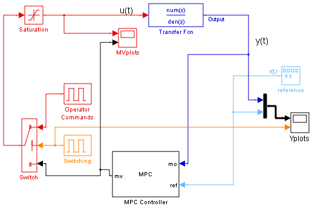
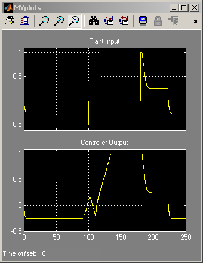
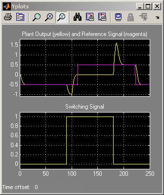

MPC Bumpless Transfer
Contents
This demonstration shows how to obtain bumpless transfer when switching MPC from manual to automatic operation or vice versa. In particular, it shows how the EXT.MV input signal to the MPC block can be used to keep the internal MPC state up to date while the operator is in control of the MV.
MPC Controller Setup
if ~mpcchecktoolboxinstalled('simulink') disp('Simulink(R) is required to run this demo.') return end
Let us define the plant to be controlled.
num=[1 1]; den=[1 3 2 0.5]; sys=tf(num,den);
Now, we define an MPC controller object.
Ts=0.5; % sampling time p=15; % prediction horizon m=2; % control horizon
Let us assume default values for weights and build the MPC object.
MPC1=mpc(sys,Ts,p,m);
-->The "Weights.ManipulatedVariables" property of "mpc" object is empty. Assuming default 0.00000. -->The "Weights.ManipulatedVariablesRate" property of "mpc" object is empty. Assuming default 0.10000. -->The "Weights.OutputVariables" property of "mpc" object is empty. Assuming default 1.00000.
Change the output weight.
MPC1.Weights.Output=0.01;
Define constraints on the manipulated variable.
MPC1.MV=struct('Min',-1,'Max',1,'RateMin',-1e5);
Closed-Loop Simulation Using Simulink®
Set total simulation time.
Tstop=250; % Open the simulink diagram 'MPC_BUMPLESS.MDL' open_system('mpc_bumpless'); sim('mpc_bumpless',Tstop); bdclose('mpc_bumpless')
-->Converting the "Model.Plant" property of "mpc" object to state-space. -->Converting model to discrete time. -->Integrated white noise added on measured output channel #1. -->The "Model.Noise" property of the "mpc" object is empty. Assuming white noise on each measured output channel.
For Comparison, Disconnect the External MV Signal and Simulate
Now the transition from manual to automatic control is much less smooth. Note the large "bump" between time = 180 and 200.
open_system('mpc_bumpless'); delete_line('mpc_bumpless','Switch/1','MPC Controller/3'); delete_line('mpc_bumpless','Switching/1','MPC Controller/4'); set_param('mpc_bumpless/MPC Controller','mv_inport','off'); set_param('mpc_bumpless/MPC Controller','switch_inport','off'); set_param('mpc_bumpless/Yplots','Ymin','-1.1~-0.1') set_param('mpc_bumpless/Yplots','Ymax','1.8~1.1') set_param('mpc_bumpless/MVplots','Ymin','-0.6~-0.5') set_param('mpc_bumpless/MVplots','Ymax','1.1~1.1') sim('mpc_bumpless',Tstop);  
bdclose('mpc_bumpless')